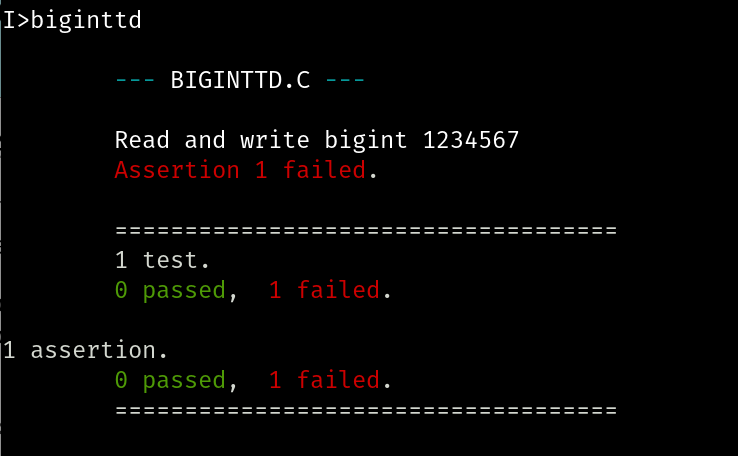

Overview
Happy New Year! For the final weeks of our course we will continue to develop an arbitrary precision integer in C on the Intel 8080 processor.
But before we do that, please visit https://nova.mce.cc and use your VCCS email address as you login and your 7-digit NOVA ID as your password to complete your course evaluation. NOVA really wants student participation here, and your willingness to complete this task reflects well on your instructors, so thank you in advance for doing it.
Thursday, January 9th
Intro
I only had a few minutes over Winter break to work on this, but I did enough
to reach an impass we can hopefully resolve together today. I split my
previous start on BigInt into two files. BIGINT.H:
struct bigint {
char negative;
char numdigits;
char* digits;
};
void set_bigint();
char* get_bigint();
and BIGINT.C:
#include#include "BIGINT.H" void set_bigint(numstr, num) char *numstr; struct bigint *num; { char last_pos, i; num->negative = (numstr[0] == '-'); num->numdigits = strlen(numstr) - num->negative; num->digits = alloc(num->numdigits); last_pos = num->numdigits + (num->negative ? 0 : -1); for (i = 0; i < num->numdigits; i++) { num->digits[i] = numstr[last_pos-i]; /* printf("numstr[%d] is %c\n", last_pos-i, numstr[last_pos-i]); */ } } char* get_bigint(num) struct bigint *num; { char *numstr; char start_pos, i; numstr = alloc(num->numdigits + (num->negative ? 2 : 1)); start_pos = num->negative; if (start_pos == 1) numstr[0] = '-'; for (i = 0; i < num->numdigits; i++) { numstr[i+start_pos] = num->digits[num->numdigits-(i+1)]; /* printf("numstr[%d] is %c\n", i, numstr[i+start_pos]); */ } numstr[num->numdigits+start_pos] = '\0'; return numstr; }
The I wrote BIGINTTD.C to test it:
#include "BIGINT.H"
#include "BDSCTEST.H"
main() {
START_TESTING("BIGINTTD.C");
TEST_CASE("Read and write bigint 1234567") {
struct bigint bi;
set_bigint("1234567", &bi);
ASSERT_STR(get_bigint(bi, "1234567"));
}
END_TESTING();
}
I compiled and linked these with the following sequence of commands:
I>cc bigint I>cc biginttd I>clink biginttd bigint
which generated BIGINTTD.COM. Running it, I got:

Hopefully our classroom super stars, Caleb and Akshay (with welcome assistance from any aspiring classroom super stars), will be able to figure out why this is failing and get us on our way.
Classwork / Homework / Evaluation
Get the first tests working to be able to read and write our
BigInt values. Each of us should be making regular
commits of our progress, since our evaluation will be based on these commits.